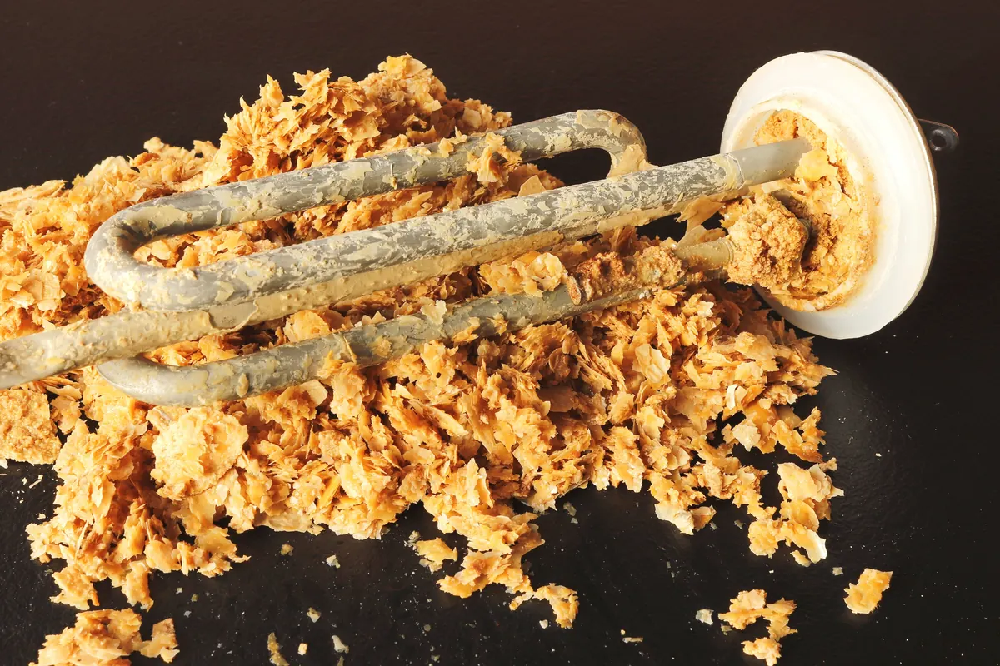

Most homeowners do not think about their water heater until it stops producing hot water. By then, the real problem may have been building for years: sediment accumulation. Sediment is one of the biggest reasons tanks lose efficiency, make strange noises, and fail earlier than expected. That is why many plumbing professionals call it the silent killer of water heaters.

If you want to extend water heater life, lower energy costs, and avoid surprise breakdowns, routine maintenance matters. Angle Stop Plumbing helps homeowners protect their systems with professional inspection, flushing, repair, and replacement services designed to keep water heaters working longer.
What Is Sediment in a Water Heater?
Sediment is made up of naturally occurring minerals, mostly calcium and magnesium, that are found in your home's water supply. When water is heated, those minerals separate and settle at the bottom of the tank.
Over time, that layer gets thicker and harder. In areas with hard water, sediment can build up even faster. What starts as a minor issue can eventually interfere with heating performance and damage the inside of the tank.
For homeowners searching for answers about water heater sediment buildup, this is often the hidden cause behind poor performance and rising utility bills.
Why Sediment Is So Damaging
Sediment may seem harmless, but it creates multiple problems inside your unit.
1. It Reduces Efficiency
When sediment forms a layer at the bottom of the tank, the burner or heating elements have to work harder to heat the water. That means your unit uses more energy to do the same job.
This is one of the main reasons homeowners notice an increase in monthly utility costs without realizing their water heater maintenance has been neglected.
2. It Causes Overheating
The sediment layer traps heat in the bottom of the tank. That extra heat can stress the metal, damage the tank lining, and wear out internal parts faster than normal.
Over time, overheating can shorten the lifespan of the entire system.
3. It Creates Noise
If your water heater is making popping, rumbling, or banging sounds, sediment may be the culprit. As trapped water beneath the sediment heats and escapes, it creates noise that many homeowners mistake for a harmless quirk.
In reality, those sounds often signal that your unit is under strain.
4. It Leads to Early Failure
Left untreated, sediment buildup can contribute to tank corrosion, leaks, inconsistent water temperature, and total system breakdown. A water heater that should last many years may fail far sooner if sediment is allowed to build unchecked.
That is why regular service is one of the smartest ways to prevent water heater failure.
Common Signs of Sediment Buildup in a Water Heater
Sediment problems usually develop slowly, which makes them easy to ignore. Watch for these warning signs:
- Hot water runs out too quickly
- Water takes longer to heat
- Popping or rumbling noises from the tank
- Cloudy or rusty-looking water
- Higher energy bills
- Inconsistent water temperature
- Leaks around the tank
If you notice one or more of these issues, it may be time to schedule professional water heater service before the problem gets worse.
How to Extend Water Heater Life
The good news is that sediment damage is often preventable. With routine care, many homeowners can significantly improve performance and extend the life of their unit.
Here are the most effective ways to keep your system in better condition:
Flush the Tank Regularly
A professional tank flush helps remove built-up sediment before it hardens and causes serious damage. This is one of the most important steps in water heater maintenance.
Inspect the Anode Rod
The anode rod helps protect the inside of the tank from rust and corrosion. If it wears out, the tank itself becomes more vulnerable. Replacing a failing rod at the right time can add years to a water heater's life.
Check for Corrosion and Leaks
Small warning signs can turn into major problems if they go unnoticed. Regular inspections help identify wear before it becomes a costly emergency.
Maintain the Right Temperature Setting
Water that is set too hot can increase wear on the system and raise energy use. Proper settings help balance comfort, safety, and efficiency.
Schedule Preventive Service
Routine maintenance is the best long-term strategy for homeowners who want to make a water heater last longer. Preventive care helps catch issues early and keeps the system running efficiently.
How Angle Stop Plumbing Helps Extend Your Water Heater Life
Angle Stop Plumbing helps homeowners protect their investment with dependable, professional plumbing services focused on long-term performance. Whether your unit needs a simple flush, a detailed inspection, a repair, or full replacement, their team can diagnose the issue and recommend the right solution.
When you work with Angle Stop Plumbing, you get help with:
- Water heater flushing to remove sediment buildup
- Routine maintenance to improve efficiency
- Inspection of key components
- Repair of developing problems before they worsen
- Water heater replacement when a unit is beyond repair
Choosing a trusted local plumber for regular maintenance can help you avoid unexpected failure and get the most from your equipment.
Why Preventive Maintenance Saves Money
Many homeowners delay service because the water heater still seems to be working. The problem is that sediment damage happens gradually. By the time you lose hot water completely, you may be facing a much larger repair bill - or the cost of a full replacement.
Preventive maintenance offers several clear benefits:
- Lower energy bills
- Better hot water performance
- Fewer emergency repairs
- Longer system lifespan
- Reduced risk of leaks and water damage
Investing in regular water heater maintenance by Angle Stop Plumbing can save money over time while giving you more reliable hot water every day.
Final Thoughts
Sediment truly is the silent killer of water heaters because it builds slowly, hides inside the tank, and causes damage long before most homeowners realize there is a problem. If ignored, it can lead to inefficiency, overheating, costly repairs, and premature replacement.
If you want to extend the life of your water heater, improve efficiency, and reduce the risk of breakdowns, professional maintenance is the key. Angle Stop Plumbing provides the service and expertise needed to keep your water heater in strong working condition for years to come.
A well-maintained water heater lasts longer, performs better, and costs less to operate. That makes prevention one of the smartest plumbing decisions a homeowner can make.